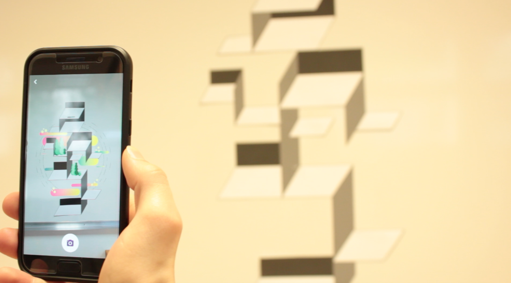

Projet : workshop de Noël avec l’intervenant Dino Voodoo, illustrateur et graphiste freelance. Réalisation d’une signalétique en réalité augmentée incarnant les formations du lycée Bréquigny, avec l’application smartphone BEAR.
Description : travail en quatuor pour la formation STI2D (dévelopement durable). Le visuel imprimé représente une forme géométrique abstraite. En scannant avec l’application, une animation d'une construction de ville vient augmenter le visuel de base. Divers éléments y figurent : usines, maisons, arbres. Les sons de chaques objets s'additionnent et s'harmonisent pour former une musique.
 Téléchargement de la videoObjectif : évoquer l’industrie, les techniques et le développement durable qui sont au cœur de cette formation, à travers une animation symolisant la construction d'un système urbain.